工作区主页面workspace
工作区、历史、仓库获取、提交核对、冲突、AI、设置与迁移。所有页面共享同一套留白、卡片、代码阅读和确认层级。
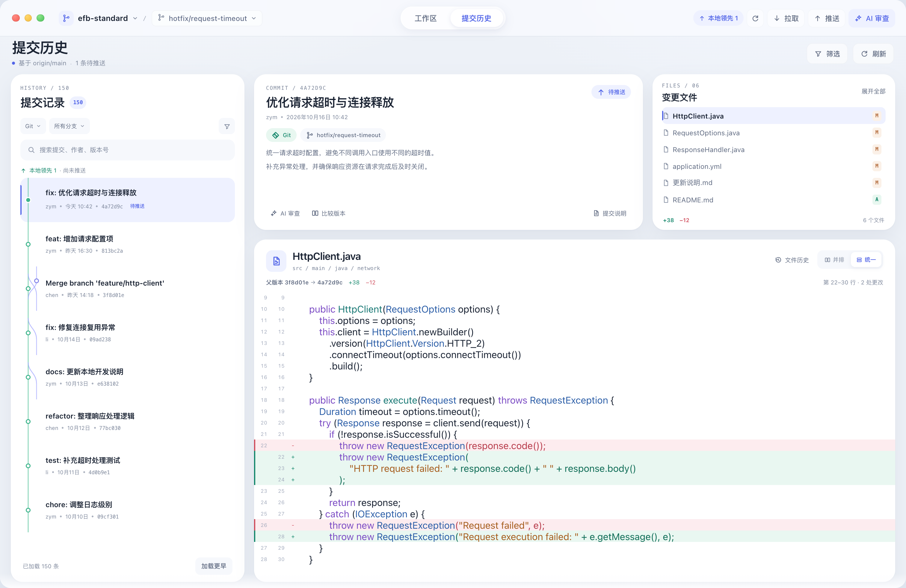
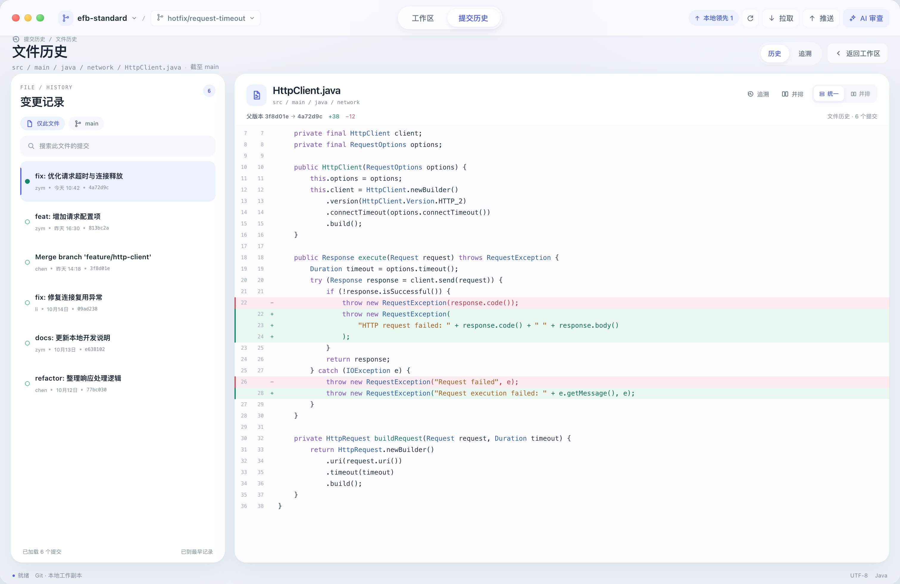
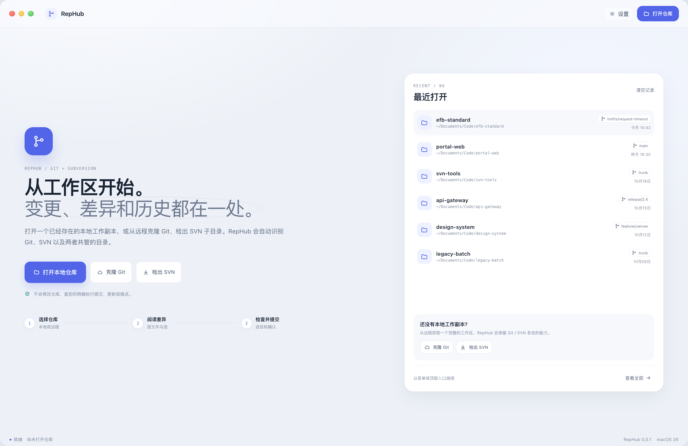
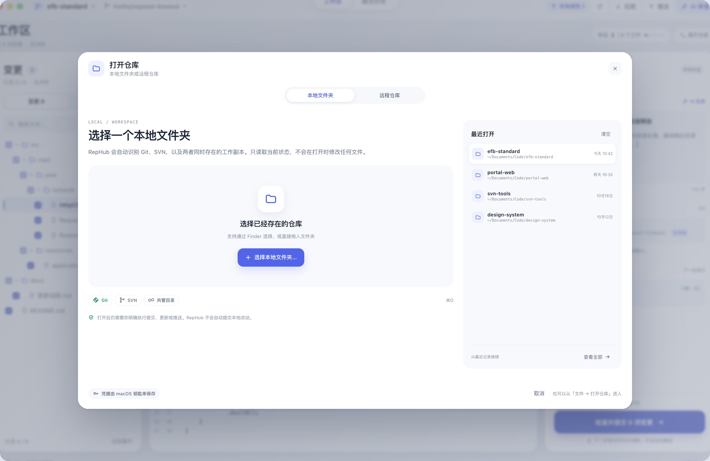
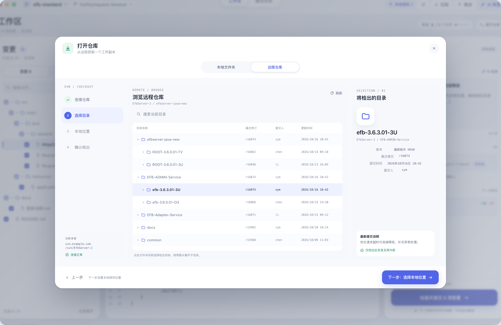
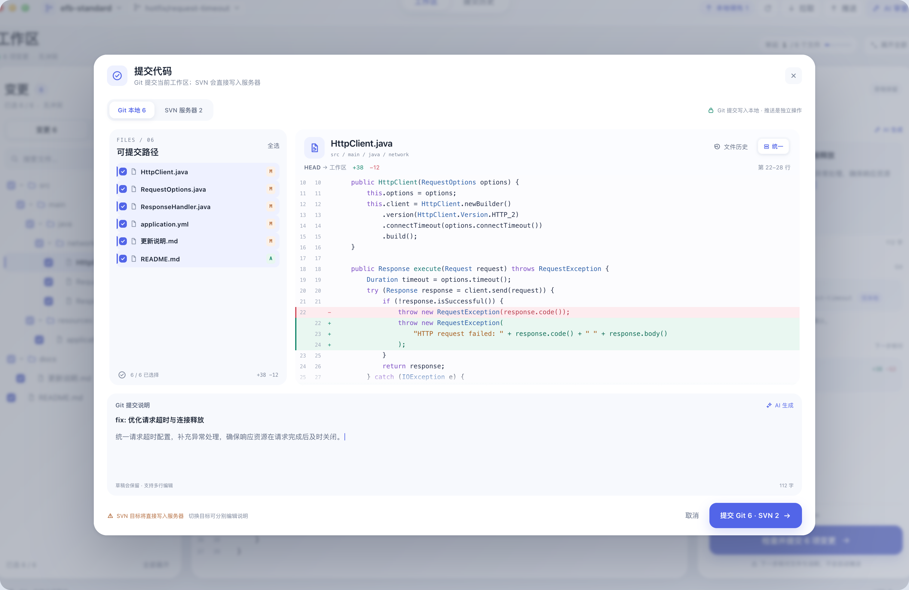
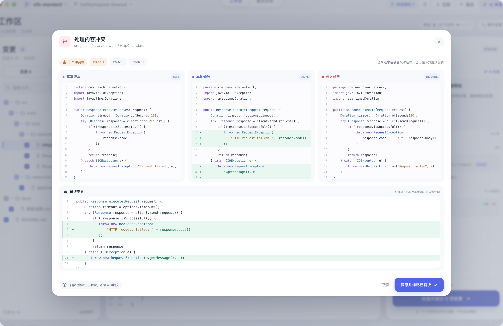
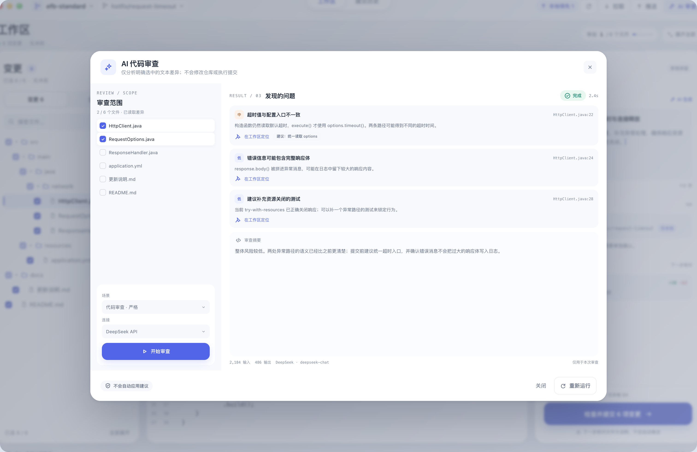
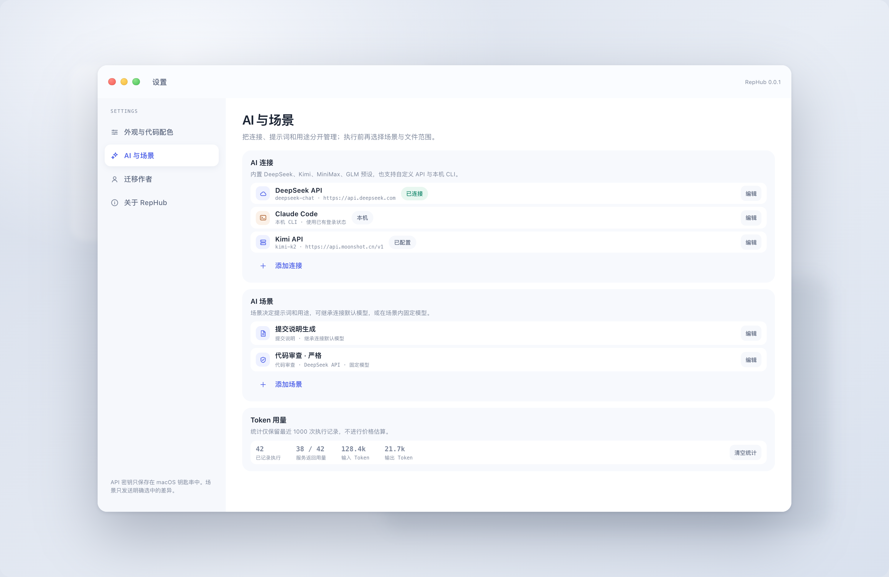
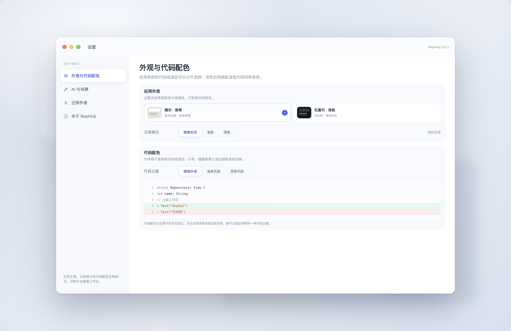
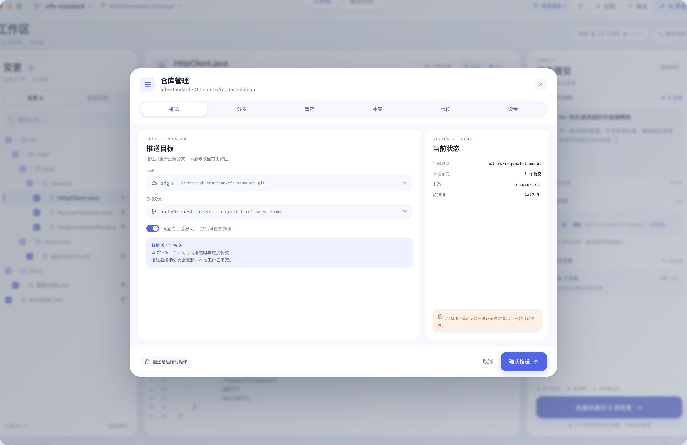
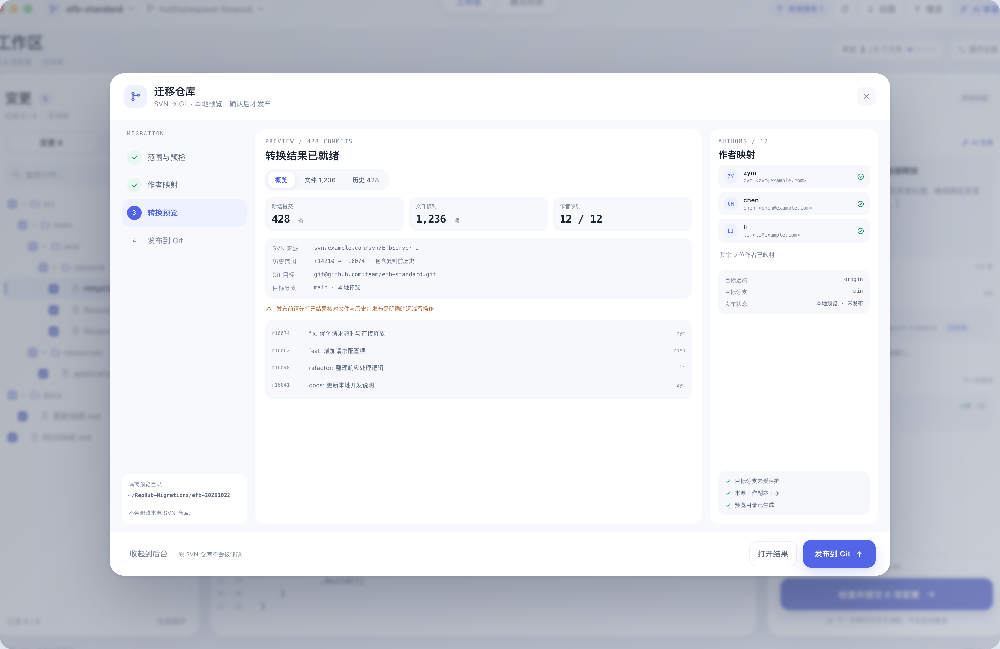
顶栏 60、页面头 64、内容边距 18。主页面使用 20 圆角白卡；弹窗固定 70 头部与 66 底部操作区。
靛蓝只给主操作和选中态；绿色表示成功与新增，红色表示删除与失败，琥珀只用于需要核对的提醒。
双行号、等宽字体和 19 像素行高。差异行保持矩形，不叠加卡片圆角；状态永远同时有文字或图标。